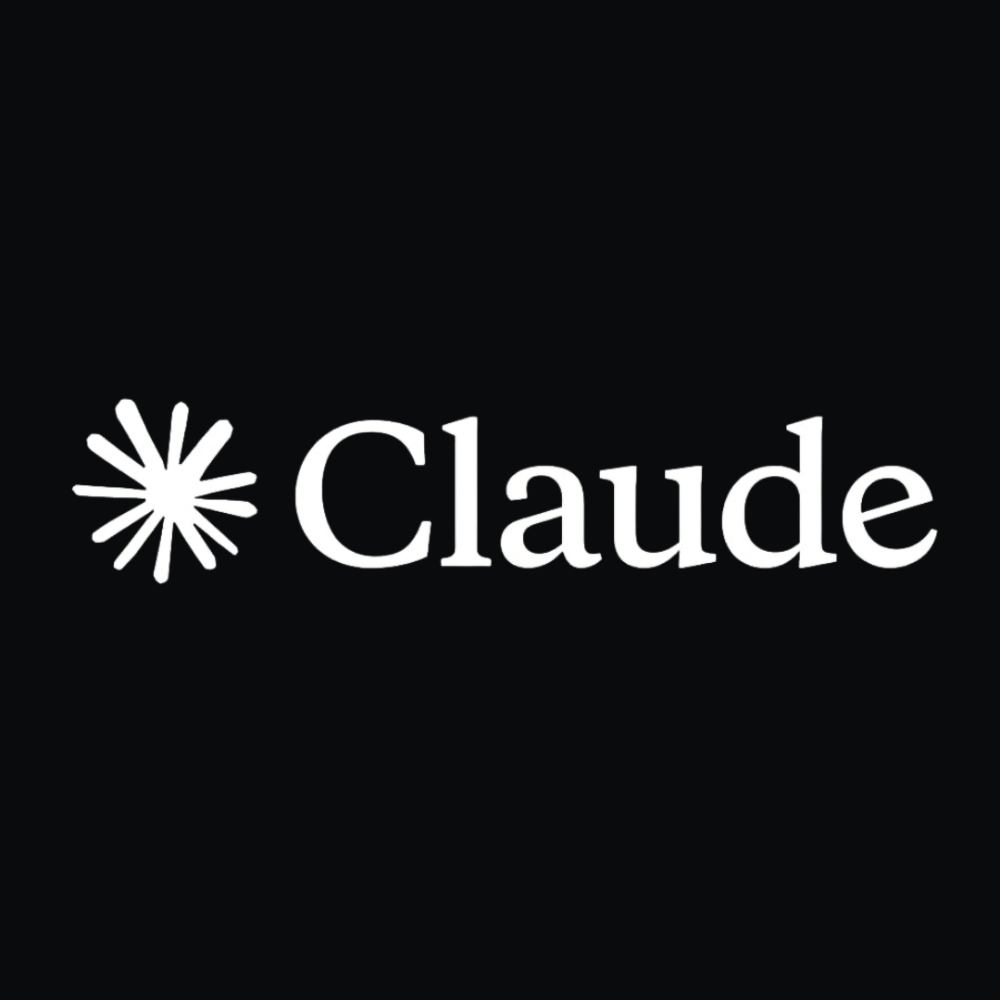

GPT-6 全面開放，免費版也能用
OpenAI 本週把 GPT-6 推向所有 ChatGPT 用戶，付費用戶用 GPT-6 Sol、免費用戶用 GPT-6 Luna，一次終結了只有高階訂閱才能用最新模型的時代。同步上線的 Intelligent UI 是最大亮點：回答不再只是純文字，模型會自動生成可點擊按鈕、互動圖表和計算器，聊天框正式從對話框變成應用介面。根據官方數據，網路搜尋類查詢的首 token 時間比 GPT-5.6 縮短約 44%，搜尋體驗明顯更順。這一步被視為 OpenAI 從「模型公司」轉向「作業系統公司」的關鍵落子，直接衝擊 Perplexity 等 AI 搜尋產品。